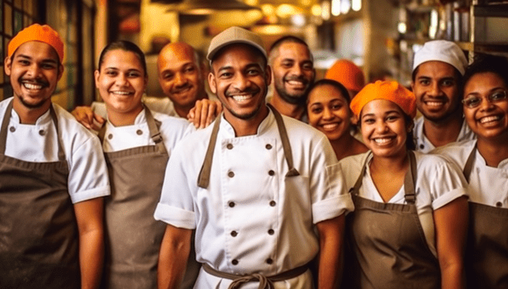

🍴 Sabores do Senac 🍴
Equipe:

Restarante:

Sobre Nós:
Em uma encantadora cidade italiana chamada Riva del Sole , a jovem chef Laura, recém-formada pelo Senac, decidiu realizar seu sonho e abrir um restaurante. Com uma paixão profunda pela culinária e um amor pela cultura italiana, ela inaugurou o "Sabores do Senac". Laura encontrou um edifício histórico no coração da cidade, com paredes de pedra e janelas amplas, o que proporcionou um cenário perfeito para criar um ambiente acolhedor e sofisticado.
Após meses de renovação, o "Sabores do Senac" abriu suas portas, oferecendo um cardápio que era uma verdadeira homenagem à culinária italiana, mas com um toque inovador. Laura utilizava ingredientes frescos e locais, criando pratos como risottos aromáticos, massas artesanais e sobremesas deliciosas que rapidamente conquistaram os corações dos moradores e visitantes. Além disso, Laura transformou o restaurante em um centro de aprendizado, organizando workshops culinários aos sábados com chefs renomados, atraindo tanto locais quanto turistas.
O "Sabores do Senac" tornou-se um ponto de encontro comunitário, onde Laura promovia eventos para arrecadar fundos para instituições locais e apoiava produtores regionais. Com o passar dos anos, o restaurante consolidou-se como um ícone em Riva del Sole, oferecendo uma experiência rica e culturalmente envolvente. Laura continuou a inovar e a encantar seus clientes, mantendo o espírito de aprendizado e comunidade que tornava o restaurante tão especial. Assim, o "Sabores do Senac" tornou-se um verdadeiro tesouro, celebrando a rica herança culinária da Itália.